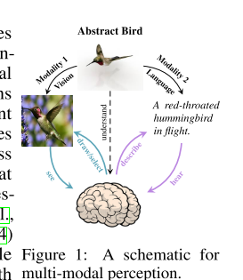
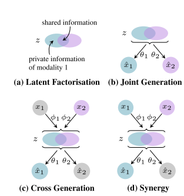
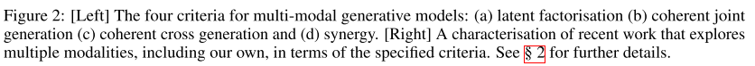
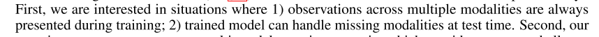
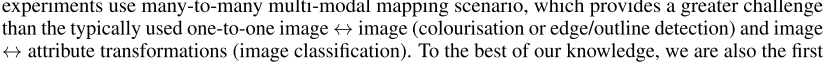
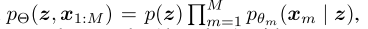
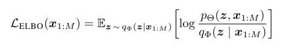
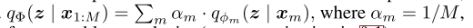

Multi Modal Variational AutoEncoders
Variational Mixture-of-Experts Autoencoders for Multi Modal Deep Generative Models
Intro
They characterize successful learning of such models as fulfilment of four criteria - i) implicit latent decomposition into shared and private subspaces, ii) coherent joint generation over all modalities, iii) coherent cross-generation across individual modalities, and iv) improved model learning for individual modalities through multi-modal integration.

When we take all modalities(visual, linguistic and physical) into account, we can get a better understanding and representation of context, for ex. here bird.


- Latent Factorization - There is some shared and private spaces across different modalities.
- Joint Generation - From union of both spaces we could generate different modalities. Basically, for example, text and image should be semantically same.
- Cross Generation - Model can generate data in one modality conditioned on some other modality. For ex. From text, generate an image.
- Synergy - Observing both modalities should enhance context understanding. For example observing image and text should improve in specificity of generation of image and text when taken alone.


Related Works
There has been some work in the area of joint representations for example
Suzuki et al. (2017) introduced the joint multimodal VAE (JMVAE) that learns shared representation with joint encoder qΦ(z | x1, x2). To handle missing data at test time, two unimodal encoders qΦ(z | x1) and qΦ(z | x2) are trained to match qΦ(z | x1, x2) with a KL constraint between them.
However, they only focuses on one way transformation that too image-to-image and often require additional modelling components.
More recently, Wu and Goodman (2018) introduced Product of Experts(PoE) over marginal posteriors, enabling cross model generations at test time without requiring additional inference networks and multi-stage training regimes.
Some Mathematics
We denote modalities with m = 1,2,3……M and latent representation as z.
VAE is of form : 
VAEs are parametrized by $\theta$ which is deep neural network.
The objective of training VAEs is to maximise the marginal likelihood of the data pΘ(x1:M). However, computing the evidence is intractable as it requires knowledge of the true joint posterior pΘ(z | x1:M). To tackle this, we approximate the true unknown posterior by a variational posterior qΦ(z | x1:M), which now allows optimising an evidence lower bound (ELBO) through stochastic gradient descent (SGD), with ELBO defined as

They further used IWAE estimator to get a tighter bound and higher entropy.
Here too, we are facing one issue, how to get joint posterior q$\phi$? One basic way is get a single encoder that takes all modalities as input. But that would mean, we need all modalities present at test time which won’t be true for cross modal generation.
So instead they propose to factorise joint variational posterior as a combination of unimodal posteriors(weighted sum) :

When using Product-of-Experts, any one modality hold the power of veto.
For better understanding of VAEs both from Neural Network and probabilistic perspective, you can follow these links:
- https://ermongroup.github.io/cs228-notes/inference/variational/
- https://www.cse.iitk.ac.in/users/piyush/courses/tpmi_winter19/readings/VI_Review.pdf
- https://jaan.io/what-is-variational-autoencoder-vae-tutorial/
Results
As this is a new idea and theory based paper, they have done experiments on MNIST-SVHN data and Caltech Bird dataset(challenging). You can view results here on all four characteristics mentioned above.